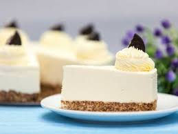

Чізкейк без випікання
Легкий і смачний десерт, який не потребує випікання. Ідеально підходить для швидкого приготування.
Інгредієнти
- 200 г печива (наприклад, «Марія»)
- 100 г вершкового масла
- 400 г вершкового сиру (cream cheese)
- 200 мл вершків 33-35%
- 100 г цукру
- 1 ч.л. ванільного цукру
- 2 ст.л. лимонного соку
Приготування
- Подрібніть печиво в крихту, розтопіть масло і змішайте з печивом. Викладіть суміш у форму, утрамбуйте і поставте в холодильник.
- Збийте вершковий сир з цукром і ванільним цукром до однорідності.
- Окремо збийте вершки до стійких піків.
- Обережно змішайте сирну масу з вершками і додайте лимонний сік.
- Вилийте крем на основу з печива і поставте в холодильник мінімум на 4 години, краще на ніч.
- Перед подачею можна прикрасити ягодами або шоколадною стружкою.